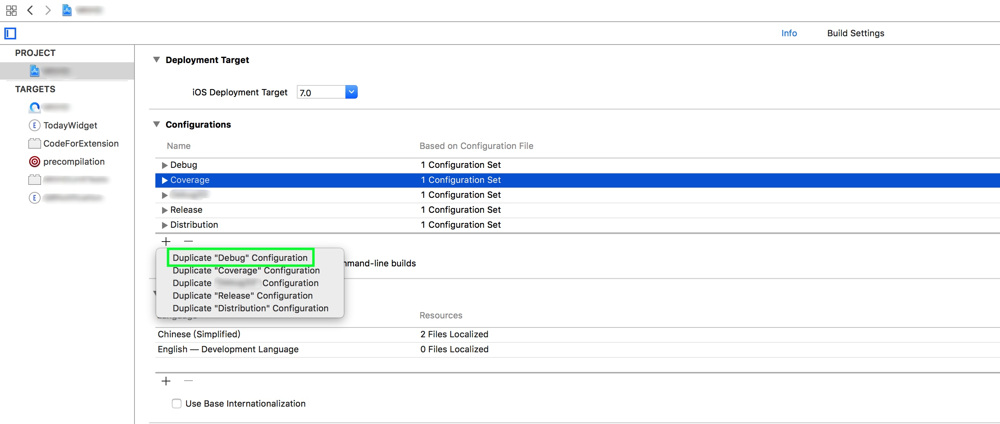
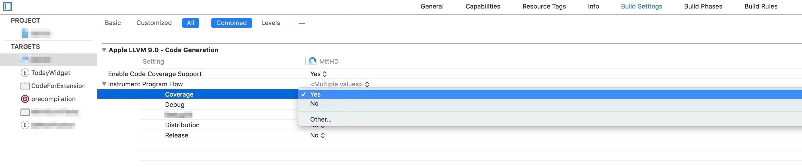
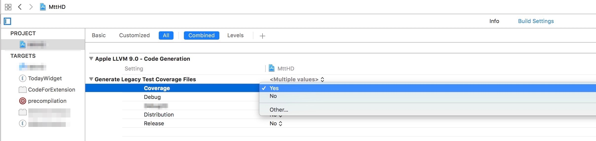
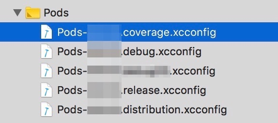
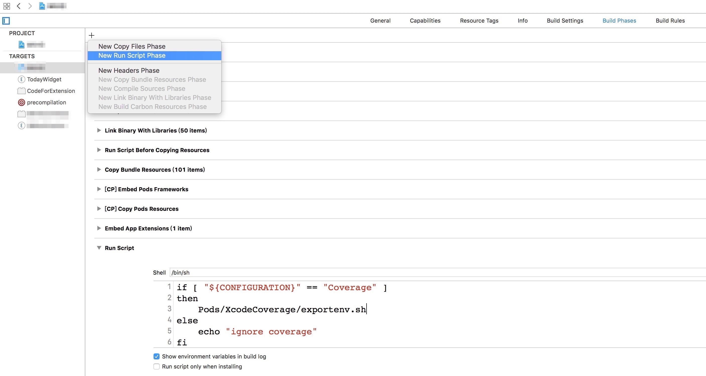
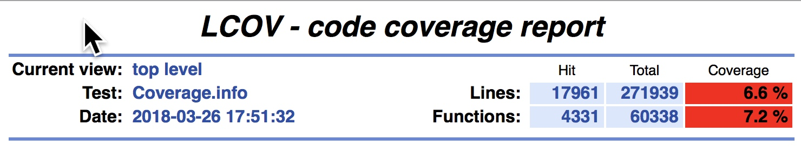

XcodeCoverage 是一个基于lcov的统计工具，用于计算Xcode项目的单元测试覆盖率，且能生成html格式的统计报表。配置过程可以分为以下几个步骤：
- 为工程添加
XcodeCoverage代码 - 更新Xcode工程Scheme
- 注入提取环境变量的脚本
为工程添加XcodeCoverage代码
使用CocoaPods可以方便地添加XcodeCoverage代码。修改Podfile并执行pod install命令。
# Podfile
...
pod 'XcodeCoverage', '~>1.0'
...
更新Xcode工程Scheme
-
在
Configurations下新增一个配置项，一般可以通过Duplicate "Debug" Configuration得到，并改名为Coverage。
-
设置
Project->Build Settings->Instrument Program Flow为YES
-
设置
Project->Build Settings->Generate Coverage Test Files为YES
更新Pods的xcconfig文件
复制一份Pods的xcconfig文件。例如我的工程名为MttHD，则需要复制一份Pods-MttHD.debug.xcconfig，更名为Pods-MttHD.coverage.xcconfig，并引入工程。

注入提取环境变量的脚本
在Build Phases中新增一个New Run Script Phase，添加下面的脚本：
if [ "${CONFIGURATION}" == "Coverage" ]
then
Pods/XcodeCoverage/exportenv.sh
else
echo "ignore coverage"
fi

运行XcodeCoverage
如果是第一次运行，首先要clean一下工作目录，Product -> Clean。
接下来执行任意一个单元测试，然后执行命令bash ./Pods/XcodeCoverage/run_code_coverage_post.sh。

Tips
- 计算覆盖率的过程，需要在build过程中生成一些额外的文件，在开发调试的时候用不到，所以新增一个Scheme，以免降低Debug的build效率。
- 通过注入提取环境变量的脚本，我们可以获取build过程中所有的环境变量。环境变量的列表可以查看以往的build log。
- 第一次运行之前clean工作目录，因为在新增的Scheme目录下工作需要生成依赖的Pod库文件。
本文由 Ltryee
创作，采用 知识共享署名4.0 国际许可协议进行许可
本站文章除注明转载/出处外，均为本站原创或翻译，转载前请务必署名
最后编辑时间为: 2018-03-26T17:13:57+08:00